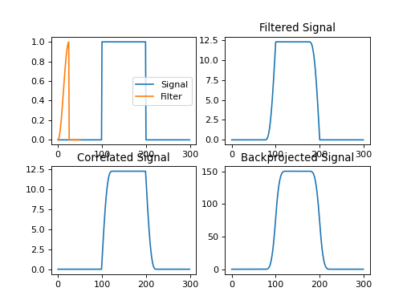
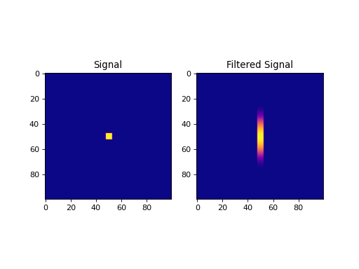
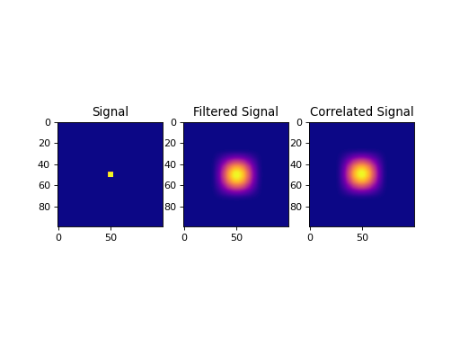
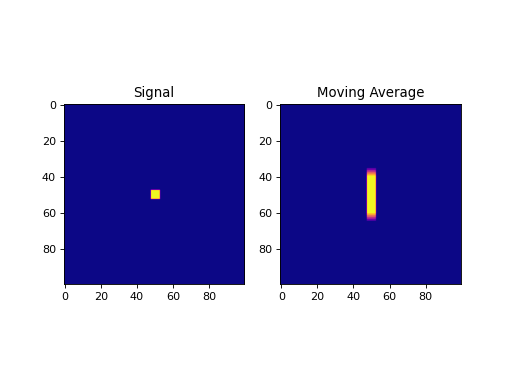
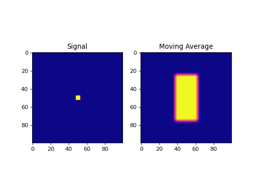

Convolution Operators¶
Convolution and smoothing operators for 1D, 2D and graph signals.
Many of the linear operator provided in this module are derived from linear operators from PyLops.
1D Operators
|
1D convolution operator. |
|
1D moving average. |
2D Operators
|
2D convolution operator. |
|
2D moving average. |
Graph Operators
|
Graph convolution. |
-
Convolve1D(size: int, filter: numpy.ndarray, reshape_dims: Optional[tuple] = None, axis: int = 0, dtype: type = 'float64', method: Optional[str] = None) → pycsou.linop.base.PyLopLinearOperator[source]¶ 1D convolution operator.
This docstring was adapted from ``pylops.signalprocessing.Convolve1D``.
Convolve a multi-dimensional array along a specific
axiswith a one-dimensional compactfilter.- Parameters
size (int) – Size of the input array.
filter (np.ndarray) – 1d compact filter. The latter should be real-valued and centered around its mid-size index.
reshape_dims (Optional[tuple]) – Shape of the array to which the convolution should be applied.
axis (int) – Axis along which to apply convolution.
dtype (str) – Type of elements of the input array.
method (Optional[str]) – Method used to calculate the convolution (
direct,fft, oroverlapadd). Note that onlydirectandfftare allowed whendims=None, whilstfftandoverlapaddare allowed whendimsis provided.
- Returns
Convolution operator.
- Return type
- Raises
NotImplementedError – If
methodprovided is not allowed.
Examples
>>> sig = np.repeat([0., 1., 0.], 10) >>> filter = signal.hann(5); filter[filter.size//2:] = 0 >>> ConvOp = Convolve1D(size=sig.size, filter=filter) >>> filtered = ConvOp * sig >>> filtered_scipy = signal.convolve(sig, filter, mode='same', method='direct') >>> np.allclose(filtered, filtered_scipy) True
import numpy as np import matplotlib.pyplot as plt from pycsou.linop.conv import Convolve1D from scipy import signal sig = np.repeat([0., 1., 0.], 100) filter = signal.hann(50); filter[filter.size//2:] = 0 ConvOp = Convolve1D(size=sig.size, filter=filter) filtered = ConvOp * sig correlated = ConvOp.H * sig backprojected = ConvOp.DomainGram * sig plt.figure() plt.subplot(2,2,1) plt.plot(sig); plt.plot(np.linspace(0, 50, filter.size), filter); plt.legend(['Signal', 'Filter']) plt.subplot(2,2,2) plt.plot(filtered); plt.title('Filtered Signal') plt.subplot(2,2,3) plt.plot(correlated); plt.title('Correlated Signal') plt.subplot(2,2,4) plt.plot(backprojected); plt.title('Backprojected Signal') plt.show()
(Source code, png, hires.png, pdf)
import numpy as np import matplotlib.pyplot as plt from pycsou.linop.conv import Convolve1D from scipy import signal sig = np.zeros(shape=(100,100)) sig[sig.shape[0] // 2 - 2:sig.shape[0] // 2 + 3, sig.shape[1] // 2 - 2:sig.shape[1] // 2 + 3] = 1 filter = signal.hann(50) ConvOp = Convolve1D(size=sig.size, filter=filter, reshape_dims=sig.shape, axis=0) filtered = (ConvOp * sig.reshape(-1)).reshape(sig.shape) plt.figure() plt.subplot(1,2,1) plt.imshow(sig, cmap='plasma'); plt.title('Signal') plt.subplot(1,2,2) plt.imshow(filtered, cmap='plasma'); plt.title('Filtered Signal') plt.show()
(Source code, png, hires.png, pdf)
Notes
The
Convolve1Doperator applies convolution between the input signal \(x(t)\) and a compact filter kernel \(h(t)\) in forward model:\[y(t) = \int_{-\infty}^{\infty} h(t-\tau) x(\tau) d\tau\]This operation can be discretized as follows
\[y[n] = \sum_{m\in\mathbb{Z}} h[n-m] x[m], \, n\in\mathbb{Z},\]as well as performed in the frequency domain:
\[Y(f) = \mathscr{F} (h(t)) \times \mathscr{F} (x(t)),\; f\in\mathbb{R}.\]Convolve1Doperator usesscipy.signal.convolve()that automatically chooses the best method for computing the convolution for one dimensional inputs. The FFT implementationscipy.signal.fftconvolve()is however enforced for signals in 2 or more dimensions as this routine efficiently operates on multi-dimensional arrays. The methodoverlapaddusesscipy.signal.oaconvolve().As the adjoint of convolution is correlation,
Convolve1Doperator applies correlation in the adjoint mode.In time domain:
\[x(t) = \int_{-\infty}^{\infty} h(t+\tau) x(\tau) d\tau\]or in frequency domain:
\[y(t) = \mathscr{F}^{-1} (H(f)^\ast \times X(f)).\]See also
-
Convolve2D(size: int, filter: numpy.ndarray, shape: tuple, dtype: type = 'float64', method: str = 'fft') → pycsou.linop.base.PyLopLinearOperator[source]¶ 2D convolution operator.
This docstring was adapted from ``pylops.signalprocessing.Convolve2D``.
Convolve a two-dimensional array with a two-dimensional compact
filter.- Parameters
size (int) – Size of the input array.
filter (np.ndarray) – 2d compact filter. The latter should be real-valued and centered around its central indices.
shape (tuple) – Shape of the array to which the convolution should be applied.
dtype (str) – Type of elements of the input array.
method (str) – Method used to calculate the convolution (
directorfft).
- Returns
Convolution operator.
- Return type
- Raises
ValueError – If
filteris not a 2D array.
Examples
>>> sig = np.zeros(shape=(100,100)) >>> sig[sig.shape[0] // 2 - 2:sig.shape[0] // 2 + 3, sig.shape[1] // 2 - 2:sig.shape[1] // 2 + 3] = 1 >>> filter = signal.hann(25); filter[filter.size//2:] = 0 >>> filter = filter[None,:] * filter[:,None] >>> ConvOp = Convolve2D(size=sig.size, filter=filter, shape=sig.shape) >>> filtered = (ConvOp * sig.ravel()).reshape(sig.shape) >>> filtered_scipy = signal.convolve(sig, filter, mode='same', method='fft') >>> np.allclose(filtered, filtered_scipy) True
import numpy as np import matplotlib.pyplot as plt from pycsou.linop.conv import Convolve2D from scipy import signal sig = np.zeros(shape=(100,100)) sig[sig.shape[0] // 2 - 2:sig.shape[0] // 2 + 3, sig.shape[1] // 2 - 2:sig.shape[1] // 2 + 3] = 1 filter = signal.hann(50) filter = filter[None,:] * filter[:,None] ConvOp = Convolve2D(size=sig.size, filter=filter, shape=sig.shape) filtered = (ConvOp * sig.ravel()).reshape(sig.shape) correlated = (ConvOp.H * sig.ravel()).reshape(sig.shape) plt.figure() plt.subplot(1,3,1) plt.imshow(sig, cmap='plasma'); plt.title('Signal') plt.subplot(1,3,2) plt.imshow(filtered, cmap='plasma'); plt.title('Filtered Signal') plt.subplot(1,3,3) plt.imshow(correlated, cmap='plasma'); plt.title('Correlated Signal') plt.show()
(Source code, png, hires.png, pdf)
Notes
The
Convolve2Doperator applies two-dimensional convolution between the input signal \(d(t,x)\) and a compact filter kernel \(h(t,x)\) in forward model:\[y(t,x) = \int_{-\infty}^{\infty}\int_{-\infty}^{\infty} h(t-\tau,x-\chi) d(\tau,\chi) d\tau d\chi\]This operation can be discretized as follows
\[y[i,n] = \sum_{j=-\infty}^{\infty} \sum_{m=-\infty}^{\infty} h[i-j,n-m] d[j,m]\]as well as performed in the frequency domain:
\[Y(f, k_x) = \mathscr{F} (h(t,x)) \times \mathscr{F} (d(t,x)).\]Convolve2Doperator usesscipy.signal.convolve()that automatically chooses the best domain for the operation to be carried out.As the adjoint of convolution is correlation,
Convolve2Doperator applies correlation in the adjoint mode.In time domain:
\[y(t,x) = \int_{-\infty}^{\infty}\int_{-\infty}^{\infty} h(t+\tau,x+\chi) d(\tau,\chi) d\tau d\chi\]or in frequency domain:
\[y(t, x) = \mathscr{F}^{-1} (H(f, k_x)^\ast \times X(f, k_x)).\]See also
-
MovingAverage1D(window_size: int, shape: tuple, axis: int = 0, dtype='float64')[source]¶ 1D moving average.
Apply moving average to a multi-dimensional array along a specific axis.
- Parameters
- Returns
1D moving average operator.
- Return type
Examples
import numpy as np import matplotlib.pyplot as plt from pycsou.linop.conv import MovingAverage1D from scipy import signal sig = np.zeros(shape=(100,100)) sig[sig.shape[0] // 2 - 2:sig.shape[0] // 2 + 3, sig.shape[1] // 2 - 2:sig.shape[1] // 2 + 3] = 1 MAOp = MovingAverage1D(window_size=25, shape=sig.shape, axis=0) moving_average = (MAOp * sig.ravel()).reshape(sig.shape) plt.figure() plt.subplot(1,2,1) plt.imshow(sig, cmap='plasma'); plt.title('Signal') plt.subplot(1,2,2) plt.imshow(moving_average, cmap='plasma'); plt.title('Moving Average') plt.show()
(Source code, png, hires.png, pdf)
Notes
The
MovingAverage1Doperator is a special type of convolution operator that convolves along a specific axis an array with a constant filter of size \(n_{smooth}\):\[\mathbf{h} = [ 1/n_{smooth}, 1/n_{smooth}, ..., 1/n_{smooth} ]\]For example, for a 3D array \(x\),
MovingAverage1Dapplied to the first axis yields:\[y[i,j,k] = 1/n_{smooth} \sum_{l=-(n_{smooth}-1)/2}^{(n_{smooth}-1)/2} x[l,j,k].\]Note that since the filter is symmetrical, the
MovingAverage1Doperator is self-adjoint.
-
MovingAverage2D(window_shape: Union[tuple, list], shape: tuple, dtype='float64')[source]¶ 2D moving average.
Apply moving average to a 2D array.
- Parameters
- Returns
2D moving average operator.
- Return type
Examples
import numpy as np import matplotlib.pyplot as plt from pycsou.linop.conv import MovingAverage2D from scipy import signal sig = np.zeros(shape=(100,100)) sig[sig.shape[0] // 2 - 2:sig.shape[0] // 2 + 3, sig.shape[1] // 2 - 2:sig.shape[1] // 2 + 3] = 1 MAOp = MovingAverage2D(window_shape=(50,25), shape=sig.shape) moving_average = (MAOp * sig.ravel()).reshape(sig.shape) plt.figure() plt.subplot(1,2,1) plt.imshow(sig, cmap='plasma'); plt.title('Signal') plt.subplot(1,2,2) plt.imshow(moving_average, cmap='plasma'); plt.title('Moving Average') plt.show()
(Source code, png, hires.png, pdf)
Notes
The
MovingAverage2Doperator is a special type of convolution operator that convolves a 2D array with a constant 2d filter of size \(n_{smooth, 1} \quad \times \quad n_{smooth, 2}\):\[y[i,j] = \frac{1}{n_{smooth, 1} n_{smooth, 2}} \sum_{l=-(n_{smooth,1}-1)/2}^{(n_{smooth,1}-1)/2} \sum_{m=-(n_{smooth,2}-1)/2}^{(n_{smooth,2}-1)/2} x[l,m]\]Note that since the filter is symmetrical, the
MovingAverage2Doperator is self-adjoint.
-
class
GraphConvolution(Graph: pygsp.graphs.graph.Graph, coefficients: Union[numpy.ndarray, list, tuple])[source]¶ Bases:
pycsou.linop.base.PolynomialLinearOperatorGraph convolution.
Convolve a signal \(\mathbf{u}\in\mathbb{C}^N\) defined on a graph with a polynomial filter \(\mathbf{D}:\mathbb{C}^N\rightarrow \mathbb{C}^N\) of the form:
\[\mathbf{D}=\sum_{k=0}^K \theta_k \mathbf{L}^k,\]where \(\mathbf{L}:\mathbb{C}^N\rightarrow \mathbb{C}^N\) is the normalised graph Laplacian (see [FuncSphere] Section 2.3 of Chapter 6).
Examples
>>> G = RandomRegular(seed=0) >>> G.compute_laplacian(lap_type='normalized') >>> signal = np.random.binomial(n=1,p=0.2,size=G.N) >>> coefficients = np.ones(shape=(3,)) >>> ConvOp = GraphConvolution(Graph=G, coefficients=coefficients) >>> filtered = ConvOp * signal
import numpy as np from pygsp.graphs import Ring from pycsou.linop.conv import GraphConvolution np.random.seed(0) G = Ring(N=32, k=2) G.compute_laplacian(lap_type='normalized') G.set_coordinates(kind='spring') signal = np.random.binomial(n=1,p=0.2,size=G.N) coefficients = np.ones(3) ConvOp = GraphConvolution(Graph=G, coefficients=coefficients) e1 = np.zeros(shape=G.N) e1[0] = 1 filter = ConvOp * e1 filtered = ConvOp * signal plt.figure() ax=plt.gca() G.plot_signal(signal, ax=ax, backend='matplotlib') plt.title('Signal') plt.axis('equal') plt.figure() ax=plt.gca() G.plot_signal(filter, ax=ax, backend='matplotlib') plt.title('Filter') plt.axis('equal') plt.figure() ax=plt.gca() G.plot_signal(filtered, ax=ax, backend='matplotlib') plt.title('Filtered Signal') plt.axis('equal')
Notes
The
GraphConvolutionoperator is self-adjoint and operates in a matrix-free fashion, as described in Section 4.3, Chapter 7 of [FuncSphere].See also
-
__init__(Graph: pygsp.graphs.graph.Graph, coefficients: Union[numpy.ndarray, list, tuple])[source]¶ - Parameters
Graph (pygsp.graphs.Graph) – Graph on which the signal is defined, with normalised Laplacian
Graph.Lprecomputed (see pygsp.graphs.Graph.compute_laplacian(lap_type=’normalized’).coefficients (Union[np.ndarray, list, tuple]) – Coefficients \(\{\theta_k, \,k=0,\ldots,K\}\subset \mathbb{C}\) of the polynomial filter.
dtype (type) – Type of the entries of the graph filer.
- Raises
AttributeError – If
Graph.Ldoes not exist.NotImplementedError – If
Graph.lap_typeis ‘combinatorial’.
-

{kind=link}
{kind=link}
{kind=link}
{kind=link}
{kind=link}
{kind=link}
{kind=link}
{kind=link}
{kind=link}
{kind=link}
{kind=link}
{kind=link}
{kind=link}
{kind=link}
{kind=link}
{kind=link}